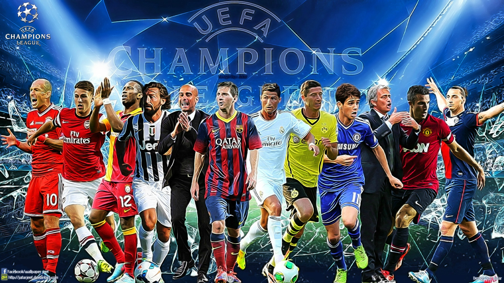

Jugadores Historicos
UEFA Champions League
Encontramos a varios jugadores iconicos en esta competicion con diferentes estadisticas cada uno quedando en la historia
leer más
Encontramos a varios jugadores iconicos en esta competicion con diferentes estadisticas cada uno quedando en la historia
leer más
Encontramos al ultimo campeon de la competicion el Manchester City logro entrar en la historia luego de haber ganado por primera vez la Orejona
leer más